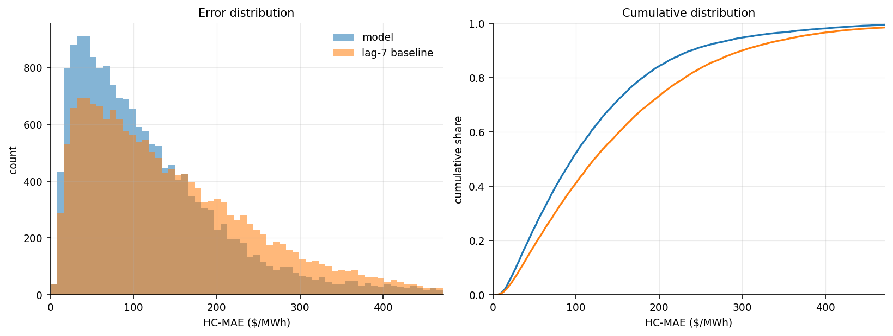
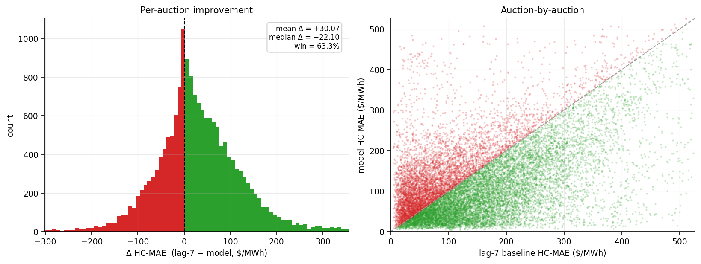
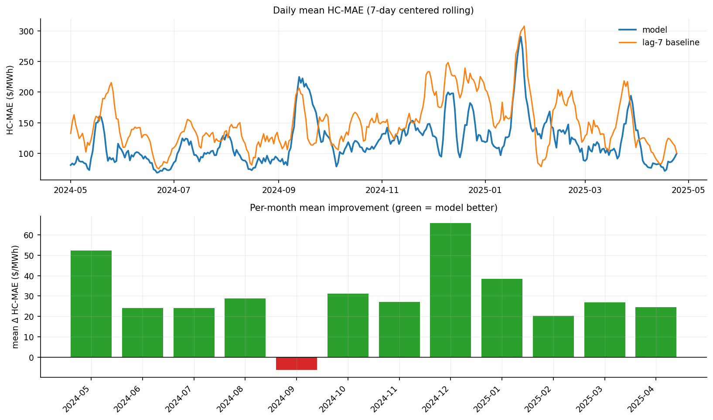
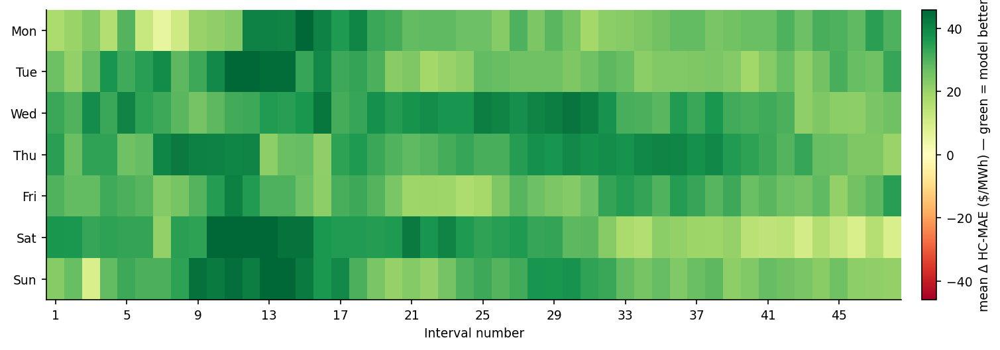
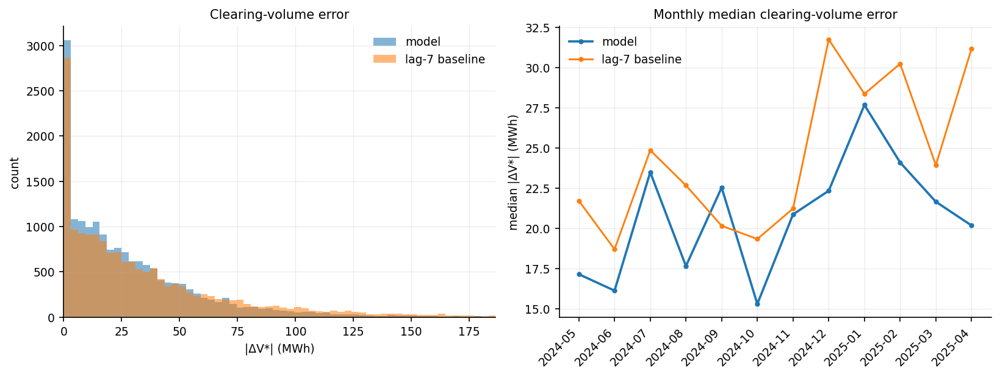
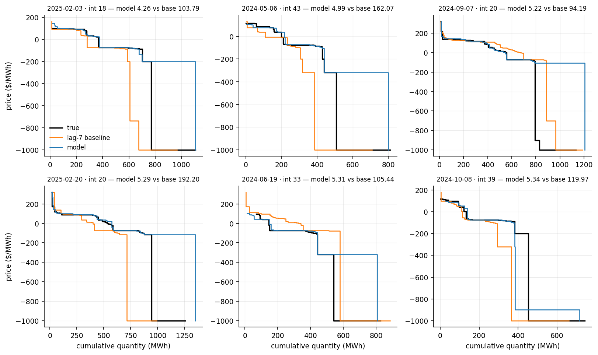
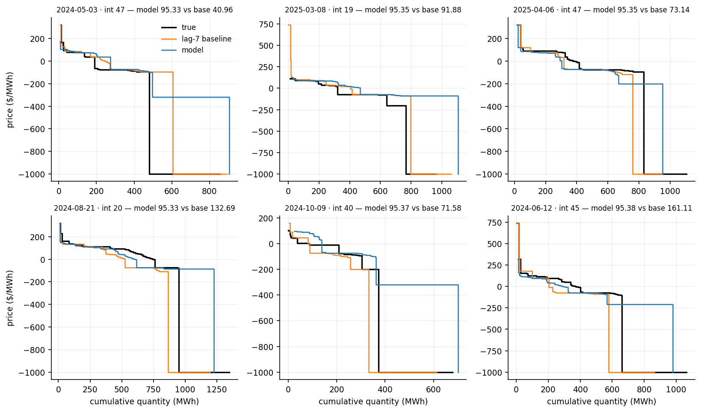
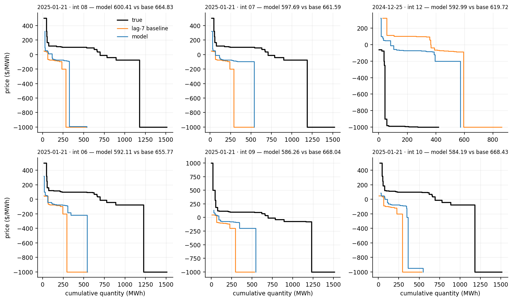

The index section Method 2: Medoids describes how this model works.
7-day-ahead · test 2024-05-01 → 2025-04-24 · 17,232 auctions · reference: lag-7 baseline
| This model | lag-7 baseline | |
|---|---|---|
| Mean HC-MAE ($/MWh) | 118.90 | 148.97 |
| Median HC-MAE ($/MWh) | 95.34 | 121.92 |
| Win % vs lag-7 | 63.3% | - |
| Mean |ΔV*| (MWh) | 29.68 | 38.02 |
| Median |ΔV*| (MWh) | 20.44 | 23.72 |
| Mean |ΔP*| ($/MWh) | 27.84 | 30.29 |
| Median |ΔP*| ($/MWh) | 3.58 | 5.75 |




The predicted demand curve is crossed with the true supply curve, and the error is how far this moves the clearing point (V*, P*).
| This model | lag-7 baseline | |
|---|---|---|
| Mean |ΔV*| (MWh) | 29.68 | 38.02 |
| Median |ΔV*| (MWh) | 20.44 | 23.72 |
| Win % on |ΔV*| | 46.4% | - |
| Mean |ΔP*| ($/MWh) | 27.84 | 30.29 |
| Median |ΔP*| ($/MWh) | 3.58 | 5.75 |
A few price-floor auctions make the mean of |ΔP*| large, so the median is the summary.



